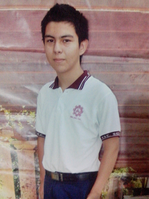

Estudié la secundaria en la Escuela Secundaria Técnica No.16 que está ubicada en el ejido 9 de Diciembre, y yo nunca antes la había visto, mis padres me dejaron escoger en que secundaria quería estudiar y yo tenía planeado estudiar en la secundaria IMA porque amigos de la primaria ahí estudiarían pero a mi mamá le habían recomendado mucho la otra secundaria entonces un día antes de irme a inscribir decidí por ir a la Esc.Se.Tec.16 y así fue.
Cuando mi madre me dijo que tenía que ir a hacer el examen de admisión en la secundaria y que ella no me iba a poder llevar, que me mandaría con una amiga de ella que su hijo que estudiaba conmigo en la primaria también estudiaría ahí pues me fue con ellos, y cuando agarramos carretera me asusté mucho porque íbamos lejos y pensaba que mi madre me había metido a un internado o algo así, o una secundaria muy lejos.
Cuando llegue a la secundaria, mire que tenía cerdos, caballos, gallinas, sapos, muchos animales, y cosechas alrededor de la escuela. Hice el examen y quedé. Ahí me gustó mucho porque la escuela tiene camión escolar y nos divertíamos mucho en los traslados que nos daban. Fue una época donde comencé a sentir el amor, aunque no tuve ninguna relación. También fue la etapa de las fiestas, ahí comencé a salir a tardeadas, juntadas, y xv años. Fue una de mis etapas favoritas.

Ultima fotografía en la secundaria, fue el día de la entrega de papeles.